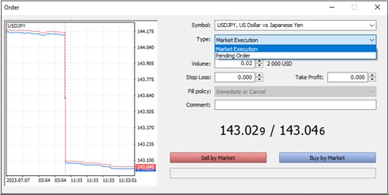

Hey there, fellow beginner forex enthusiasts! Today, I'll be your guide as we embark on an exciting journey into the realm of forex trading. In this blog post, we'll begin by unraveling the differences between normal forex trading and retail forex trading. Once we've grasped that concept, we'll then dive into the fascinating world of trading as a retail trader. So grab a cup of coffee, get comfortable, and let's delve into the intricacies of the forex market!
Forex trading, at its core, involves buying and selling currencies with the goal of making a profit. But did you know that there are two distinct approaches to forex trading? We'll start by exploring the disparity between normal forex trading and retail forex trading.
Normal forex trading is predominantly conducted by large financial institutions such as banks, hedge funds, and corporations. They engage in high-volume transactions, often dealing with millions or even billions of dollars.
On the other hand, retail forex trading is what individuals like you and me do when we participate in the forex market through online brokers. It's a world where everyday traders can seize opportunities without needing a fortune to get started.
Once we have a good grasp of these key differences, we'll shift our focus to the fascinating realm of retail forex trading. We'll delve into the tools, resources, and techniques that will empower you to trade effectively as an individual trader. From choosing a reputable broker to understanding market analysis and risk management, we'll cover the essential aspects that every retail trader should be aware of.
On the next part of this Blogpost, you'll have a solid foundation to embark on your own retail forex trading journey. So stay tuned for the upcoming sections, where we'll equip you with the knowledge and strategies you need to thrive in the ever-evolving forex market.
Get ready to embrace the world of retail forex trading and discover the potential it holds for your financial goals. Remember, knowledge is power, and with the right tools and mindset, you can navigate the forex market with confidence and competence.
Let's jump right in and unlock the secrets of successful retail forex trading together!
If you've ever been captivated by the suspense of basketball game betting or the adrenaline rush of a boxing match, then get ready to embark on a financial journey that combines the excitement of both. Imagine a global marketplace where currencies are the players, and you can strategize, predict, and make profitable moves just like a seasoned coach or an astute boxing analyst.
In this section, we will dive into the exhilarating realm of Forex trading for beginners, demystifying the process and helping you understand why it's the ultimate game-changer for those seeking financial freedom.
So, how does Forex trading compare to basketball game betting or boxing match betting? Well, picture yourself at a basketball game, eagerly analyzing the teams, players, and their past performances before placing a bet. You carefully study their stats, analyze their strategies, and try to predict who will come out on top. Forex trading shares a similar essence, as you observe various currencies, analyze economic indicators, and predict their future movements, all with the aim of making profitable trades.
Similarly, think about the anticipation of a boxing match. Will the underdog land that knockout punch, or will the favorite dominate the fight? Betting on boxing matches requires careful assessment of fighters' styles, past records, and psychological factors. In Forex trading, you'll find yourself studying charts, interpreting technical indicators, and considering geopolitical events that impact the currency markets.
But what sets Forex trading apart from both these forms of betting is that it's not just a game of chance or luck. It's a game of skill, knowledge, and strategy. Forex trading allows you to develop your skills, stay informed, and adapt your approach over time, ensuring that you have the power to influence your success.
Whether you dream of financial independence or simply want to expand your horizons, Forex trading for beginners can be an exhilarating and profitable journey. In the upcoming sections, we'll guide you through the fundamentals, empowering you to take your first steps towards becoming a successful Forex trader.
In the thrilling game of Forex trading, having the right team by your side is crucial. Enter Forex trading brokers - your trusted partners who provide you with the tools and platforms to navigate the vast currency markets. In this continuation of our beginner's guide to Forex trading, we'll explore the significance of brokers and the immense power of leverage, while shedding light on two popular trading platforms: MetaTrader4 (MT4) and MetaTrader5 (MT5).
First things first, Forex brokers act as intermediaries between you and the currency markets. They provide you with access to a wide range of currencies, real-time market prices, and essential trading tools. When choosing a broker, it's essential to consider factors such as reputation, security, trading conditions, and customer support.
Now, let's talk about leverage - a powerful tool that amplifies your trading potential. Leverage allows you to control a larger position with a smaller amount of capital. For example, with a leverage of 1:100, you can control $100,000 worth of currency with just $1,000 in your trading account. However, it's crucial to understand that while leverage can multiply profits, it also magnifies losses. Beginners should exercise caution and use leverage wisely, considering their risk tolerance and employing effective risk management strategies.
When it comes to trading platforms, MetaTrader4 (MT4) and MetaTrader5 (MT5) are industry favorites renowned for their user-friendly interfaces and powerful features. MT4 offers a wide range of analytical tools, customizable charts, and an extensive library of technical indicators. It's perfect for beginners looking to grasp the basics and execute trades with ease.
On the other hand, MT5 builds upon MT4's success by adding new features, including more advanced charting capabilities, additional order types, and the ability to trade other instruments like stocks and commodities. MT5 is suitable for traders who want to delve deeper into analysis and explore a broader range of financial markets.
Both MT4 and MT5 provide access to a thriving community of traders, expert advisors (EAs) for automated trading, and a vast marketplace of plugins and indicators to enhance your trading experience.
Choosing the right Forex trading broker is vital for your success in the currency markets. Leverage can be a powerful ally, but beginners must exercise caution and employ risk management strategies. Finally, with the user-friendly interfaces and robust features of MetaTrader4 and MetaTrader5, you'll have the tools to unlock your trading potential.Welcome back to our comprehensive guide on Forex trading! In this section, we'll explore the different types of orders and how to effectively use them on the MetaTrader4 (MT4) and MetaTrader5 (MT5) platforms. Understanding and utilizing various order types is a fundamental skill that can significantly enhance your trading experience. So, let's dive in!
Market Orders: A market order is the simplest and most commonly used order type. When you place a market order, you're instructing your broker to execute the trade at the current market price. This order type is ideal for situations where speed is crucial, and you want to enter or exit a trade immediately.
Pending Orders: Pending orders allow you to enter a trade only when certain conditions are met. Here are the three primary types of pending orders:
How to Use Orders on MetaTrader4 and MetaTrader5: Using different order types on MT4 and MT5 is a breeze. Here's a step-by-step guide:
Remember, practice and experimentation are key to mastering the art of order placement. Take advantage of demo accounts provided by brokers to gain hands-on experience without risking real money.
Understanding the different types of orders and effectively using them is crucial for successful Forex trading. Whether it's executing immediate market orders or setting up pending orders to capture future opportunities, MetaTrader4 and MetaTrader5 offer intuitive interfaces to help you navigate the trading world with confidence.
Stay tuned for the next part of our beginner's guide, where we'll delve into fundamental and technical analysis, helping you gain deeper insights into the Forex market. Until then, keep exploring, learning, and honing your trading skills!